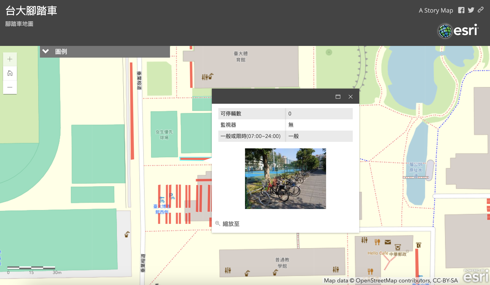

I joined Geographical Information Science Lab in the Department of Geography in National Taiwan University. My academic supervisor is Professor Tzai-Hung Wen, Ph.D.
Co-author: 楊宇翔(Yang Yu Hsiang)、蔡佳陵、王亭穎、陳奕伸、林彥廷
This project stems from a request by the General Affairs Office for a campus bicycle map. For NTU students and visitors who want to quickly familiarize themselves with the campus or explore its various facilities, the "National Taiwan University Campus Map" (http://map.ntu.edu.tw/ntu.html?) is often the go-to tool. However, this map lacks information on bicycle parking spots, which can be inconvenient for cyclists and pedestrians. For example, a cyclist who wants to switch to walking might leave their bike anywhere if they don't know where the parking spots are, creating an eyesore and potentially obstructing pedestrians.
Moreover, campus parking spots are divided into "time-limited parking areas" and "permanent parking areas." If NTU students or others needing parking could use the campus map to identify the type of parking area in advance, it would be much more convenient. For instance, a student planning to go home for the weekend might need to find a permanent parking spot close to the bus or MRT station. This feature would help them plan accordingly.
Additionally, bicycle theft on campus is not uncommon. However, if parking spots fall within the coverage of surveillance cameras, there’s a chance that stolen bikes could be recovered. Therefore, we aim to identify which bicycle parking spots are currently under surveillance. Designating these spots as safe parking areas could be beneficial. This information would also help the General Affairs Office decide where additional surveillance cameras might be needed.
本專題是源自於總務處對助教提出的校園腳踏車地圖的需求。首先，對於台大學生或外面的人想要快速認識台大校園或在校園內逛逛並了解各個建設的話，可能第一個會想到的工具或網站是「國立台灣大學校園地圖」(http://map.ntu.edu.tw/ntu.html?)，然而，這個地圖網站缺乏腳踏車停車位的地圖，這可能會造成在校園內騎腳踏車的人或行人不便之處，例如可能原本正在騎腳踏車的人突然想停下車換行走的方式逛逛，但若不知道哪裡有停車位的話可能會把車隨處亂停，一方面會不美觀，另一方面也可能造成行人行走的不便。
再來，校園內的停車位分為「限時停放區」和「永久停放區」，若台大學生或需要使用停車位的人可以事先利用台大校園地圖得知停車位是何種停放區的話，會便利許多，因為可能有學生在周末時要返鄉但腳踏車不知道要停哪裡離公車站或捷運站較近且為永久停放區，此時這個功能就能幫助他們做事先的規劃。最後，「停在校園內的腳踏車被偷」這類的事時有所聞，但若停車位剛好是監視器的照射範圍的話，愛車說不定還有機會能找回來，因此我們想知道現在所有的監視器照射範圍涵蓋的腳踏車區位有哪些，也許在照射範圍內的可以劃為安全停放區以供參考，另外，這也可以提供總務處哪些的地方需要增設監視器的決策依據。
2016-1 Geographic Information System and Lab : Campus Security Map for bicycle Parking Issue
I joined Geographical Information Science Lab in the Department of Geography in National Taiwan University. My academic supervisor is Professor Tzai-Hung Wen, Ph.D.
Any cooperation or suggestion is welcome to me. E-mail is on school system. Phonenumer and the Address is Geography Department of National Taiwan University
Since 7,August 2019 (Wed)